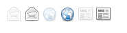
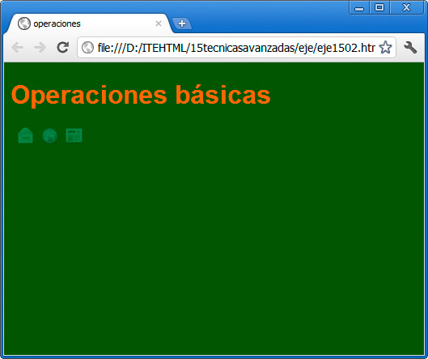
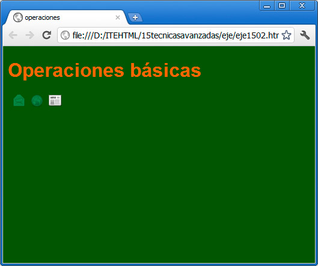

Ésta es otra técnica muy empleada, que consiste en presentar una imagen determinada en una página web y en reemplazarla por otra diferente, al pasar el puntero del ratón sobre ella. Se puede utilizar para destacar elementos, para revelar recursos ocultos, etc.
Su uso nos ayuda a profundizar en algunos conceptos que ya hemos comentado, como la gestión de eventos.
Veamos su funcionamiento mediante un ejemplo. La figura nos muestra seis imágenes que vamos a emplear para este efecto. Tres de ellas están ligeramente difuminadas, mientras que las otras tienen todo su color.

Vamos a dejar en una página las tres difuminadas y hacer que, cuando el usuario pase el ratón sobre ellas, parezca que se resalten, reemplazando las primeras por las segundas.
Ésta es la página de partida:

Y éste es el código incluido en el body:
<body>
<h1>Operaciones básicas</h1>
<p>
<img alt="" src="resources/Internet-mail-off.png" />
<img alt="" src="resources/Internet-web-browser-off.png" />
<img alt="" src="resources/Internet-news-reader-off.png" />
</p>
</body>
Todo es conocido y sencillo para nosotros. Las imágenes están guardadas en una carpeta llamada resources y en su nombre hemos añadido un -off para diferenciarlas de las que se ven con todos los colores.
Como sabemos, podemos añadir eventos a cualquier etiqueta HTML. En este caso, para poder saber si el ratón pasa por encima, tenemos el evento onmouseover, así como onmouseout para saber cuándo deja de estar encima. Por tanto, debemos añadir a cada imagen esos dos eventos:
Las tres líneas de las imágenes quedarían así:
<img alt="" src="resources/Internet-mail-off.png" onmouseover="this.src = 'resources/Internet-mail.png'" onmouseout="this.src = 'resources/Internet-mail-off.png'" />
<img alt="" src="resources/Internet-web-browser-off.png" onmouseover="this.src = 'resources/Internet-web-browser.png'" onmouseout="this.src = 'resources/Internet-web-browser-off.png'" />
<img alt="" src="resources/Internet-news-reader-off.png" onmouseover="this.src = 'resources/Internet-news-reader.png'" onmouseout="this.src = 'resources/Internet-news-reader-off.png'" />
Son largas, pero muy sencillas de entender: con ese this.src le estamos indicando al navegador que, al pasar el ratón por encima o abandonarlo (según el evento), debemos sustituir el valor src de ese elemento por la imagen que se indica.
this (traducido al español sería "éste") es un elemento del lenguaje JavaScript que nos sirve para indicar el elemento en el que nos encontramos.
Si probamos de nuevo el ejemplo, veremos que cada icono se destaca al pasar el ratón por encima. La siguiente figura muestra ese momento.

Hay otras muchas técnicas para hacer esta sustitución, aunque ésta es una de las más rápidas y sencillas.
Pregunta Verdadero-Falso
Verdadero Falso
Actividad 2
Tomaremos dos fotografías y colocaremos una en la parte central de la página. Debemos conseguir que, cuando el usuario haga clic sobre ella, se reemplace por la segunda. El evento que se emplea para esto se llama onclick.